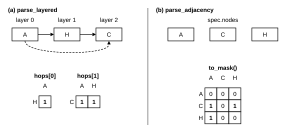
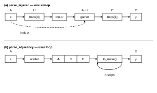

Layered vs. Adjacency¶
kpnn2 has two parsers, and you choose the layout. The same
source / target edgelist can go through either one. A DAG is
valid for both. Cycles and self-loops are allowed only by
parse_adjacency().
Getting started is a feedforward
parse_layered() workflow.
Recurrent example is a cyclic
parse_adjacency() workflow. This page is the difference
between the two specs.
How edges are stored¶
The toy is A -> H -> C plus the skip A -> C:
| source | target |
|---|---|
| A | H |
| H | C |
| A | C |

Figure 1. The same DAG parsed two ways. Layered ranks nodes
and puts every incoming edge in one hop mask (the skip is a
column of hops[1]). Adjacency puts every node in one
alphabetical state vector and every edge in packed indices.
parse_layered() assigns depth by longest path from the
inputs: A is layer 0, H is layer 1, C is layer 2.
hops[0] is the mask into H. hops[1] reads both earlier
layers because C has the skip parent A as well as H.
Skip edges is the algorithm for that extra
column.
parse_adjacency() does not rank. spec.nodes is A, C,
H in alphabetical order. Edges are packed as
source_index / target_index. spec.to_mask() is 3×3 over
that order. mask[target, source] is 1 for an original
edge. Row A is all zeros because A is an input. The skip
is just mask[C, A] = 1. There are no hops and no skips:
depth does not exist in this layout.
input_nodes, hidden_nodes, and output_nodes are the same
on both specs (A, H, and C).
How you compute¶

Figure 2. How you compute on that toy. Layered is one
sweep: hold A, gather it with H, then hops[1]. Adjacency
scatters A into the state and applies
MaskedLinear(spec.to_mask()) in a loop you own.
On a LayeredSpec you apply one MaskedLinear per hop. Keep
every produced layer in saved. gather_hop_inputs()
concatenates the source layers a hop reads. hops[0] always
reads layer 0 alone, so the gather that matters here is the
one into hops[1].
saved = {0: x}
last = len(spec.hops) - 1
for index, hop in enumerate(spec.hops):
sources = kpnn2.gather_hop_inputs(
saved,
hop,
)
hidden = self.hops[index](sources)
if index < last:
hidden = torch.relu(hidden)
saved[hop.target_layer] = hidden
self.hops[index] is MaskedLinear(hop.mask).
Getting started writes that module.
Skip edges shows why gather raises if a
source layer was never stored.
On an AdjacencySpec there is one square multiply.
align_inputs() returns len(spec.input_nodes) columns, not
len(spec.nodes), so you scatter into the state vector. Input
rows of to_mask() are structurally zero (fan_in == 0), so
that scatter is required, and so is writing the inputs again if
you loop.
core = kpnn2.MaskedLinear(spec.to_mask())
state = torch.zeros(
x.shape[0],
len(spec.nodes),
)
for _ in range(n_steps):
state[:, spec.input_index] = x
state = torch.relu(core(state))
y = state[:, spec.output_index]
n_steps is yours. kpnn2 does not unroll time.
Recurrent example trains this loop
on a graph with a feedback edge. This toy is small, so
MaskedLinear is appropriate; for large node counts and RAM
see PackedLinear.
How to choose a parser¶
- A feedforward DAG goes through
parse_layered(). That is the usual KPNN. - Cycles, self-loops, or a shared state update go through
parse_adjacency().parse_layered()raises on a cycle or a self-loop. - A DAG may go through
parse_adjacency()if you want that layout. The package never inspects the graph to pick a parser. - Both still need at least one in-degree-0 node and one out-degree-0 node. A pure ring, or a lone self-loop, is rejected on both sides.